Derwent Water Information and Photographs
Derwent Water. Laying in the beautiful Borrowdale Valley, and close to the tourist friendly town of Keswick, Derwent Water is one of the regions shallowest lakes. The 3 mile long, 1 mile wide stretch of water has a maximum depth of around 60 feet, and, on occasions, deer have been seen to swim its breadth.
There are several islands, one of which is the “Floating Island”. This is a large mass of tangled vegetation, which, when not laying on the lake bottom, is forced to the surface by expanding gases trapped beneath.
The larger Derwent Island housed German miners who had been recruited in the 19th Century by the prosperous local ore-mining industry.
St. Herberts Island was home to a religious hermit.
Friars Crag is a familiar landmark on the popular lakeside walk where stands a memorial to John Ruskin. He later wrote, that being taken to Friars Crag as a child, was the first major event in his life.
On the north-west shore stands Lingholm; a holiday location for the young Beatrix Potter whose experiences of the area helped formulate ideas for storylines in books which followed in later years.
In earlier times, Derwent Water, was known as “lake of the river with many oak trees”. Trees still line the shores and slopes, and the drive or walk along the lakeside road and path into the “Jaws of Borrowdale” and Honister Pass beyond, is a magical experience.
The lake steamers of the Keswick Launch Company operate year round cruises with several stopping-off points between the northern and southern ends. There is no better way to gain an overall picture, than to take a cruise on one of these well-equipped boats with commentary from a knowledgeable operator.
The newly refurbished “Theatre by the Lake” stages a variety of productions, where an evening show may well round-off what has been a perfect day in perfect surroundings.
Keswick and the lake are easily reached from all points of the district either by car or bus-services which link to the rail network.
Click on the photographs for a larger image.
All images open in a new window.
All images are 800x 600 resolution and may take a long time to download on slower internet connections.
For larger images (1024x768), please visit our
computer wallpapers section.
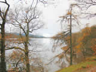 |
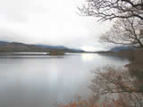 |
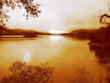 |
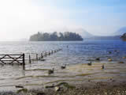 |
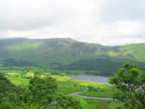 |
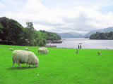 |
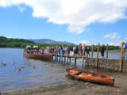 |
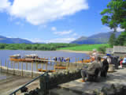 |
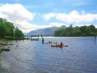 |
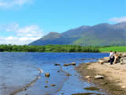 |
Next gallery | 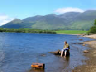 |